The Hamilton-Jacobi-Bellman PDE in control
\[
\begin{aligned}
&\underset{\mathbf u(\cdot)\in\mathcal U}{\text{minimize}}
&&\hspace{-0.5cm}
\mathcal J(\mathbf u(\cdot);\mathbf x)
=
\int_0^\infty
\ell(\mathbf y(t))
+\|\mathbf u(t)\|_R^2
\,dt
\\
&\text{subject to}
&&\hspace{-0.5cm}
\dot{\mathbf y}(t)
=
\mathbf f(\mathbf y(t))
+
\mathbf g(\mathbf y(t))\mathbf u(t),
\;
\mathbf y(0)=\mathbf x\in\mathbb R^d .
\end{aligned}
\]
Dynamic Programming
(Bellman 1950s): the value function (optimal-cost-to-go)
$
V(\mathbf x)
:=
\inf_{\mathbf u(\cdot)\in\mathcal U}
\mathcal J(\mathbf u;\mathbf x),
\qquad
\mathcal U
\equiv
L^\infty([0,+\infty);U),
$
satisfies the
Hamilton-Jacobi-Bellman
equation
$
\underset{\mathbf u\in U}{\inf}
\left[
\nabla V(\mathbf x)^\top
(\mathbf f(\mathbf x)+\mathbf g(\mathbf x)\mathbf u)
+
\ell(\mathbf x)
+
\|\mathbf u\|_R^2
\right]
=0,
\qquad
\mathbf x\in\mathbb R^d .
$
The optimal control is a
feedback map:
$
\mathbf u^*(\mathbf x(t))
:=
\operatorname*{argmin}_{\mathbf u\in U}
\left[
\nabla V(\mathbf x)^\top
(\mathbf g(\mathbf x)\mathbf u)
+
\|\mathbf u\|_R^2
\right]$
W. E. The Dawning of a New Era in Applied Mathematics.
Notices of the AMS, April 2021.
PART I
The Case for Supervised Learning
of Hamilton-Jacobi-Bellman PDEs
Time-optimal switching control as binary classification
$$
\underset{\mathbf u\in U}{\sup}
\left[
\nabla V(\mathbf x)^{\top}
(\mathbf f(\mathbf x)+\mathbf g(\mathbf x)\mathbf u)
\right]
=1,
\qquad
{\mathbf u^*(\mathbf x(t))
:=
\underset{\mathbf u\in U}{\operatorname{argmax}}
\left[
\nabla V(\mathbf x)^{\top}(\mathbf g(\mathbf x)\mathbf u)
\right]}
$$
- Bang-bang theorems (LaSalle, Bellman, Pontryagin):
$\mathbf u^*(\mathbf x(t))\in\partial U$ with at most $n-1$ switches.
- Binary classification ($\lambda=\lambda(\mathbf x)\in\{0,1\}$):
$$
\mathcal{L}(\mathbf{x}, u_{\theta}(\mathbf{x}))
:=
-\lambda \log(u_\theta(\mathbf{x}))
+
(\lambda-1)\log(1-u_\theta(\mathbf{x}))
$$
- $n$-th order integrators:
$$
\mathbf x^{(n)}=u(t),\quad U=[-1,1].
$$
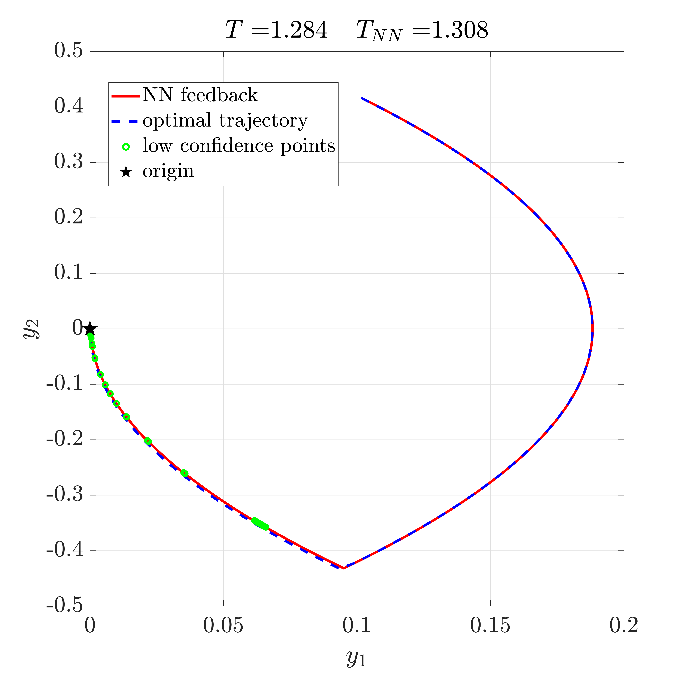
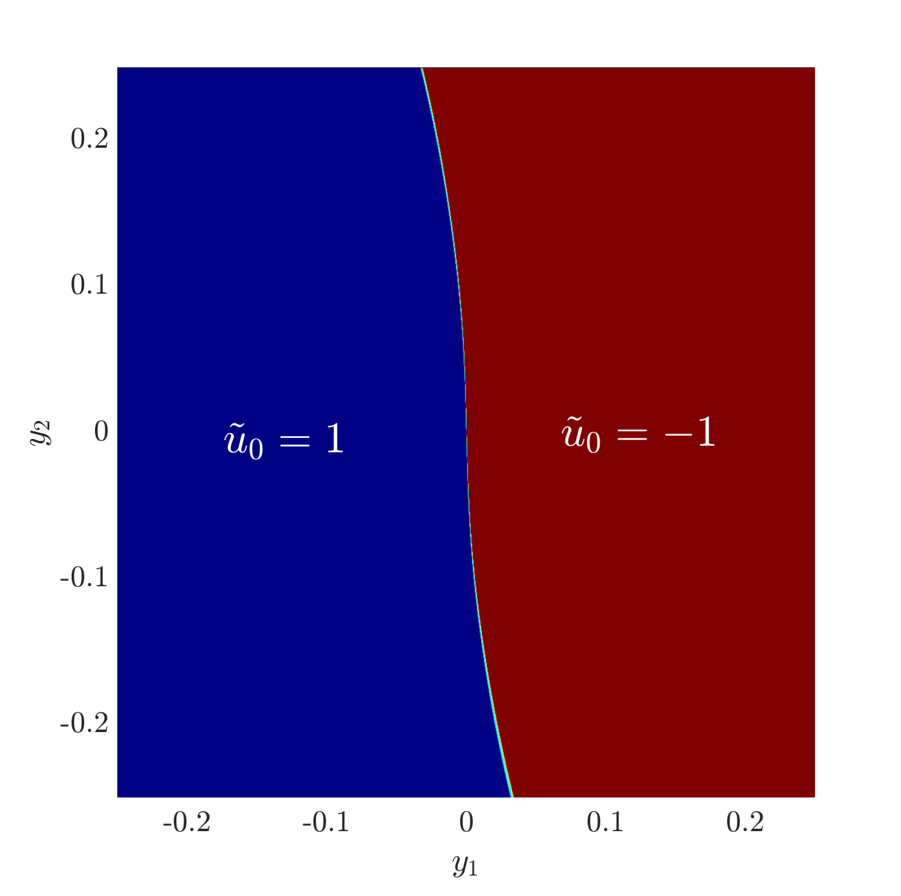
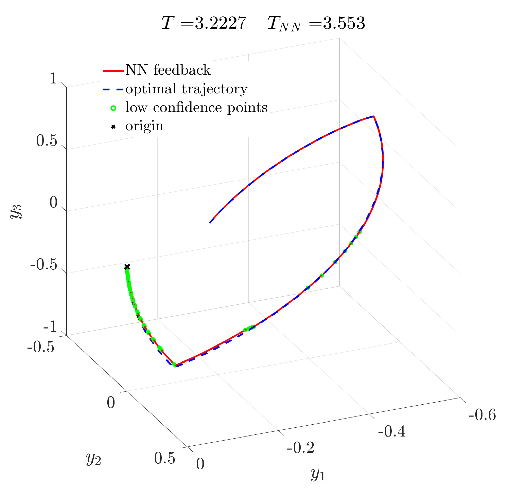
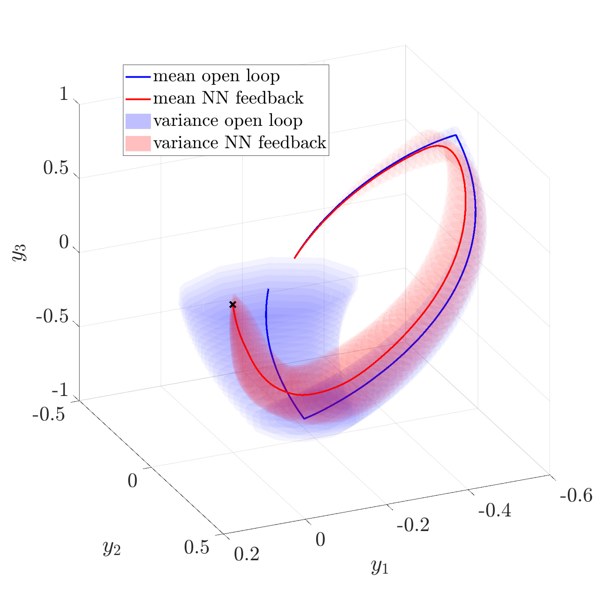
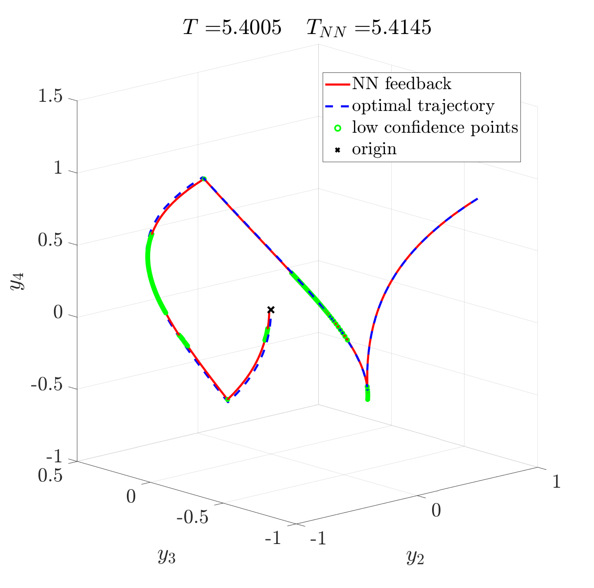
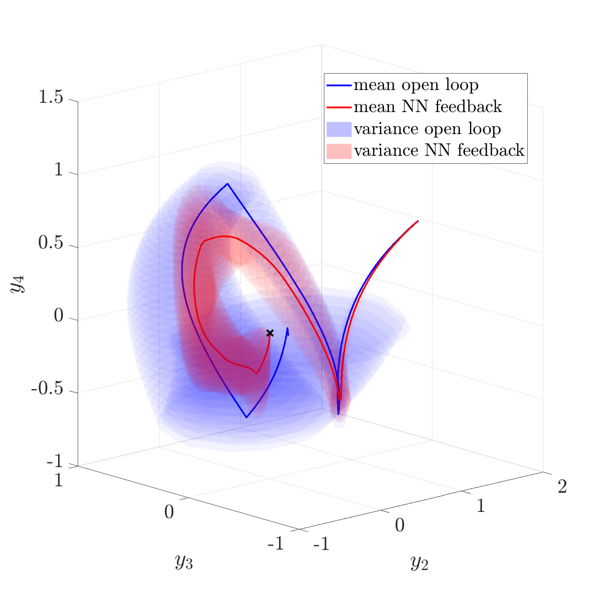
S. Bicego, S. Gue, D. K. and N. Villamizar.
Time-optimal neural feedback control of nilpotent systems as a binary classification problem, arXiv:2503.17581.
Optimal feedback control of PDEs with a data-driven TT scheme
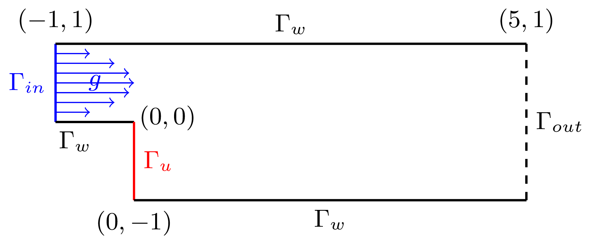
$$
\min\; \int_0^T \int_\Xi |\nabla \times y(\xi,t,\mu)|^2\,d\xi\,dt
+
\int_0^T \delta |u(t)|^2\,dt
$$
subject to
$$
\begin{cases}
\partial_t y-\nu\Delta y+y\cdot\nabla y+\nabla p=0
&(\xi,t,\mu)\in\Xi\times[0,T]\times\mathbb R^M,\\
\nabla\cdot y=0
&(\xi,t,\mu)\in\Xi\times[0,T]\times\mathbb R^M,\\
y=g(\xi;\mu)
&(\xi,t,\mu)\in\Gamma_{in}\times[0,T]\times\mathbb R^M,\\
y=0
&(\xi,t,\mu)\in\Gamma_w\times[0,T]\times\mathbb R^M,\\
y=u(t)
&(\xi,t,\mu)\in\Gamma_u\times[0,T]\times\mathbb R^M,\\
\nu\partial_n y-p\vec n=0
&(\xi,t,\mu)\in\Gamma_{out}\times[0,T]\times\mathbb R^M,\\
y(\xi,0;\mu)=y_0(\xi;\mu)
&(\xi,\mu)\in\Xi\times\mathbb R^M.
\end{cases}
$$
Feedback recovery from open-loop samples and reduced order modelling.
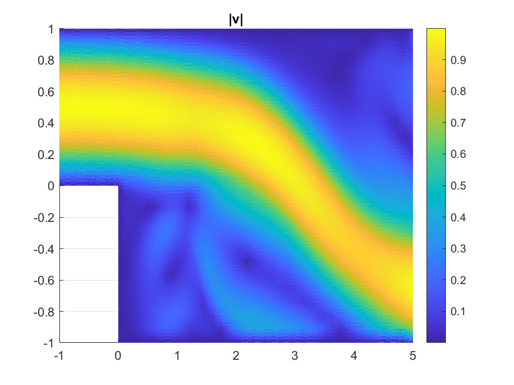
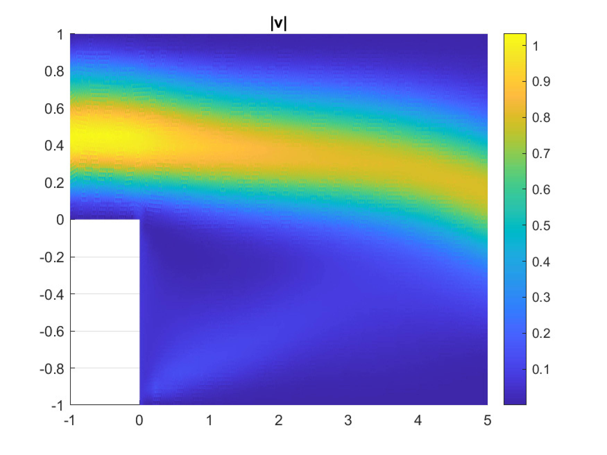
S. Dolgov, D.K. and L. Saluzzi,
Statistical Proper Orthogonal Decomposition for Feedback Control of Navier-Stokes equations, arXiv:2311.16332.
Finite-dimensional multi-level optimal control
Linear-quadratic parameter dependent optimal control problem:
$
\begin{aligned}
&\min_u\;J(u;z_0,r)
=
\int_0^\infty z(t)^\top Qz(t)+u(t)^\top Ru(t)\,dt,\\
&\text{subject to:}\qquad
\frac{dz}{dt}=Az(t)+B(r)u(t),
\quad z(0)=z_0,
\qquad
A\in\mathbb R^{n\times n},\; B(r)\in\mathbb R^{n\times m}.
\end{aligned}
$
Actuator design - robustness - performance
$
\min_{r\in\Omega^m}
\max_{\substack{z_0\in\mathbb R^n\\ \|z_0\|=1}}
\min_{u\in\mathcal U}J(u;z_0,r)
=
\min_{r\in\Omega^m}
\max_{\substack{z_0\in\mathbb R^n\\ \|z_0\|=1}}
V(z_0,r).
$
Parameter-dependent optimal cost-to-go:
$
V(z_0,r)\colon =
\min_{u\in\mathcal U}J(u;z_0,r)
=
z_0^\top \Pi(r)z_0.
$
Characterization of the lower-level problem (ARE):
$
A^\top\Pi(r)+\Pi(r)A
-\Pi(r)B(r)R^{-1}B(r)^\top\Pi(r)+Q=0.
$
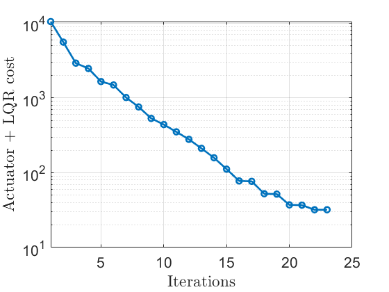
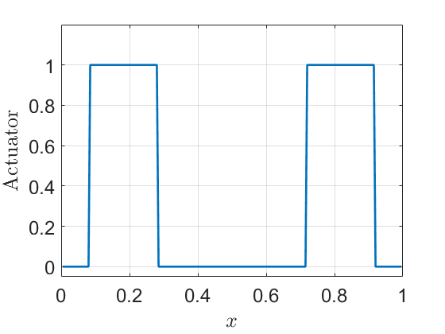
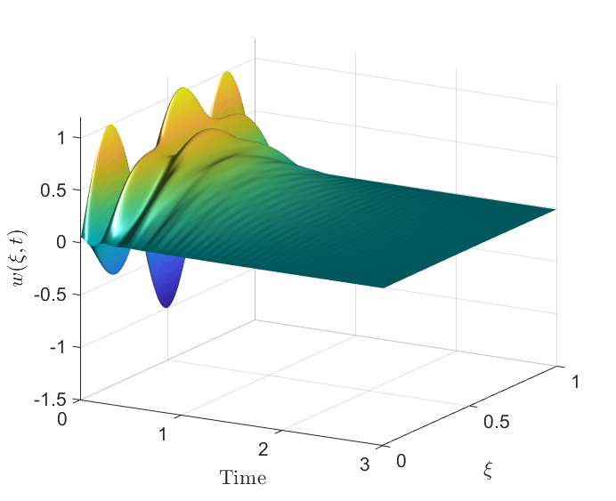
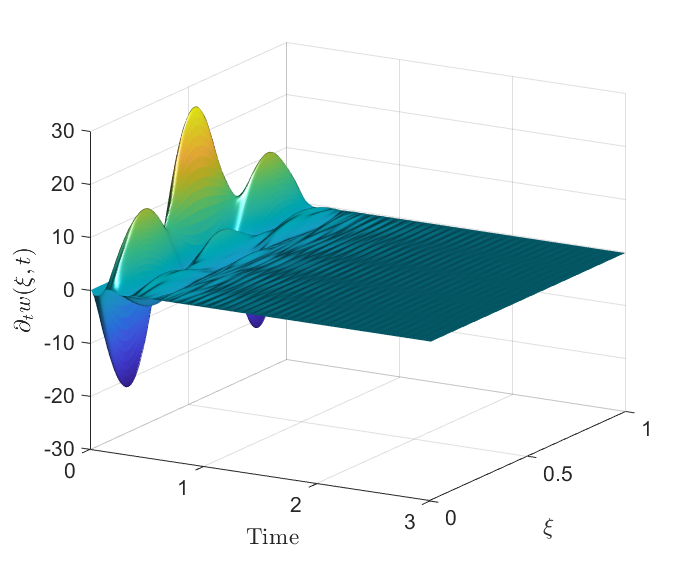
D.K., E. Loayza-Romero, K. Morris and Z. Zhong,
Multi-level Optimal Control with Neural Surrogate Models, MTNS 2024.
PINNs for infinite horizon HJB
Residual minimization and DNNs for solving HJB (DGM):
$$
\mathcal{L}^{\mathrm{res}}(\theta)
=
\frac{1}{N}\sum_{i=1}^{N}
\|\mathcal{N}(\mathbf{x}^i,V_{\theta}(\mathbf{x}^i))\|_2^2,
\qquad
\mathcal{N}(\mathbf{x},V)
:=
\nabla V(\mathbf{x})^{\top}\mathbf f(\mathbf{x})
-\frac14\nabla V(\mathbf{x})^{\top}\mathbf g(\mathbf{x})\mathbf R^{-1}\mathbf g(\mathbf{x})^{\top}\nabla V(\mathbf{x})
+\ell(\mathbf{x}).
$$
Minimizing the HJB PDE residual does not guarantee convergence to the value function !
Residual + data loss:
$$
\begin{aligned}
\mathcal{L}^{\mathrm{dat+res}}(\theta)
=&
\frac{1}{N_1}\sum_{i=1}^{N_1}
\|\bar V(\mathbf{x}^i)-V_{\theta}(\mathbf{x}^i)\|_2^2\\
&+
\frac{\lambda_1}{N_1}\sum_{i=1}^{N_1}
\|\nabla \bar V(\mathbf{x}^i)-\nabla V_{\theta}(\mathbf{x}^i)\|_2^2\\
&+
\frac{\lambda_2}{N_2}\sum_{i=1}^{N_2}
\|\mathcal{N}(\mathbf{x}^i,V_{\theta}(\mathbf{x}^i))\|_2^2.
\end{aligned}
$$
Needs to fit inaccurate data.
Pre-trained PINNs with supervised learning
Supervised phase:
$$
\mathcal{L}^{\mathrm{dat}}(\theta)
=
\frac{1}{N_1}\sum_{i=1}^{N_1}
\|\bar V(\mathbf{x}^i)-V_{\theta}(\mathbf{x}^i)\|_2^2
+
\frac{\lambda_1}{N_1}\sum_{i=1}^{N_1}
\|\nabla \bar V(\mathbf{x}^i)-\nabla V_{\theta}(\mathbf{x}^i)\|_2^2.
$$
Residual phase initialized with supervised phase parameters:
$$
\mathcal{L}^{\mathrm{res}}(\theta)
=
\frac{\lambda_2}{N_2}\sum_{i=1}^{N_2}
\|\mathcal{N}(\mathbf{x}^i,V_{\theta}(\mathbf{x}^i))\|_2^2.
$$
A. Borovykh, D. K., A. Laignelet and P. Parpas.
Data-driven initialization of deep learning solvers for Hamilton-Jacobi PDEs, IFAC-PapersOnline, 2022.
PART II
Learning with High-order Information
Model+data-driven dynamic optimization
A concrete example:
Lax-Hopf formula (Osher-Darbon 16')
$$
\begin{aligned}
\frac{\partial V(\mathbf{x},t)}{\partial t}
&+
\frac12\|\nabla_x V(\mathbf{x},t)\|^2=0,\\
V(\mathbf{x},0)&=\mathcal{J}(\mathbf{x}),\\
V(\mathbf{x},t)
&=
-\min_{\mathbf{y}\in\mathbb{R}^d}
\left\{
\mathcal{J}^*(\mathbf{y})
+
\frac{t}{2}\|\mathbf{y}\|^2
-
\langle \mathbf{x},\mathbf{y}\rangle
\right\}.
\end{aligned}
$$
- Convex optimization problem.
- Solvable in real-time.
- $\nabla V$ can be computed for free.
- What is the counterpart for relevant control problems?
J. Darbon and S. Osher,
Algorithms for Overcoming the Curse of Dimensionality for Certain Hamilton-Jacobi Equations Arising in Control Theory and Elsewhere, Res. Math. Sci. 2016.
Finite horizon optimal control
$$
\begin{aligned}
\min_{u(\cdot)\in L^2(t_0,T;\mathbb R^m)}
\mathcal{J}(\mathbf u;t_0,\mathbf x)
&:=
\int_{t_0}^{T}
\ell(\mathbf y(t))+\beta\|\mathbf u(t)\|_2^2\,dt,
\qquad \beta>0,\\
\text{subject to}\qquad
\frac{d}{dt}\mathbf y(t)
&=
\mathbf f(\mathbf y(t))+\mathbf g(\mathbf y(t))\mathbf u(t),
\qquad
\mathbf y(t_0)=\mathbf x\in\mathbb R^d.
\end{aligned}
$$
-
Optimal feedback law:
$\mathbf u^*(t,\mathbf x)=
-\frac{1}{2\beta}\mathbf g^{\top}(\mathbf x)\nabla V(t,\mathbf x)$,
where $V(t,\mathbf x):[0,T]\times\mathbb R^d\Rightarrow\mathbb R$ solves
$$
\partial_t V(t,\mathbf x)
-
\frac{1}{4\beta}
\nabla V(t,\mathbf x)^{\top}
\mathbf g(\mathbf x)\mathbf g^{\top}(\mathbf x)
\nabla V(t,\mathbf x)
+
\nabla V(t,\mathbf x)^{\top}\mathbf f(\mathbf x)
+
\ell(\mathbf x)=0,
\quad
V(T,\mathbf x)=0.
$$
-
Pontryagin's Maximum Principle
for a single trajectory departing from $\mathbf y(t_0)=\mathbf x$:
$$
\tag{TPBVP}
\left\{
\begin{aligned}
\dot{\mathbf y}(t)
&=
\mathbf f(\mathbf y(t))+\mathbf g(\mathbf y(t))\mathbf u(t),
&
\mathbf y(t_0)&=\mathbf x,\\
-\dot{\mathbf p}(t)
&=
\nabla_{\mathbf y}
(\mathbf f(\mathbf y(t))+\mathbf g(\mathbf y(t))\mathbf u(t))^{\top}\mathbf p(t)
+
\nabla_{\mathbf y}\ell(\mathbf y(t)),
&
\mathbf p(T)&=0,\\
\mathbf u(t)
&=
-\frac{1}{2\beta}\mathbf g^{\top}(\mathbf y(t))\mathbf p(t),
&
&\forall t\in(t_0,T).
\end{aligned}
\right.
$$
The link between HJB and PMP
Theorem (Mirică 85', Subbotina 06', Yegorov and Dower 17').
Let $\mathbf f$, $\mathbf g$ and $\ell$ be $\mathcal C^1(\mathbb R^d)$.
Then, the characteristic curves of the HJB PDE
$$
\partial_t V(t,\mathbf x)
-
\frac{1}{4\beta}
\nabla V(t,\mathbf x)^{\top}\mathbf g(\mathbf x)\mathbf g^{\top}(\mathbf x)
\nabla V(t,\mathbf x)
+
\nabla V(t,\mathbf x)^{\top}\mathbf f(\mathbf x)
+
\ell(\mathbf x)=0,
\quad
V(T,\mathbf x)=0,
$$
correspond to the solution of the TPBVP departing from $\mathbf y(t_0)=\mathbf x$:
$$
\tag{TPBVP}
\left\{
\begin{aligned}
\dot{\mathbf y}(t)
&=
\mathbf f(\mathbf y(t))+\mathbf g(\mathbf y(t))\mathbf u(t),
&
\mathbf y(t_0)&=\mathbf x,\\
-\dot{\mathbf p}(t)
&=
\nabla_{\mathbf y}
(\mathbf f(\mathbf y(t))+\mathbf g(\mathbf y(t))\mathbf u(t))^{\top}\mathbf p(t)
+
\nabla_{\mathbf y}\ell(\mathbf y(t)),
&
\mathbf p(T)&=0,\\
\mathbf u(t)
&=
-\frac{1}{2\beta}\mathbf g^{\top}(\mathbf y(t))\mathbf p(t),
&
&\forall t\in(t_0,T).
\end{aligned}
\right.
$$
Moreover, along an optimal trajectory
$(\mathbf y^*(t),\mathbf p^*(t),\mathbf u^*(t);\mathbf x)$,
the value function and its gradient satisfy
$$
V(t,\mathbf y^*(t))
=
\int_t^T
\ell(\mathbf y^*(s))+\beta\|\mathbf u^*(s)\|_2^2\,ds,
\quad
\nabla V(t,\mathbf y^*(t))=\mathbf p^*(t),
\quad
\forall t\in(t_0,T).
$$
N. N. Subbotina. The method of characteristics for the Hamilton-Jacobi equations and its applications in dynamic optimization. J. Math. Sci., 2006.
Generating a synthetic dataset for regression
- Sampling a set of $N_s$ initial conditions $\mathbf y(0)=\mathbf x_i,\ i=1,\ldots,N_s$ from a high-dimensional pdf.
- Numerical realization of PMP for each $\mathbf x_i$: TPBVP, reduced gradient or Newton.
- Dataset: $\{(\mathbf x_i,\mathbf y_i^*(t),\mathbf p_i^*(t),\mathbf u_i^*(t))\}_{i=1}^{N_s}$. Compute $V(0,\mathbf x_i)=\mathcal J(\mathbf u_i^*(t);0,\mathbf x_i)$ and $\nabla V(0,\mathbf x_i)=\mathbf p_i^*(0)$.
Fitting a polynomial model for $V(0,\mathbf x)$ with LASSO regression (no SGD).
$$
V(0,\mathbf x)\approx V_{\theta}(\mathbf x):=
\sum_{i=1}^q \theta_i\Phi_i(\mathbf x)
$$
Multidimensional polynomial basis: cardinality $|\Lambda|$ must scale adequately with the dimension!
- Hyperbolic cross approximation.
- multi-index $n=(n_1,\ldots,n_d)$, $\prod_{k=1}^d(n_k+1)\leq s+1$
- $|\Lambda|\leq \min\{2s^34^n,e^2s^{2+\log_2(n)}\}$
Polynomial models for value function approximation
- There is a extensive (and rigorous) literature on power series expansions for approximating the solution of HJB PDEs, dating back to Al’brekht 61' until Breiten et al. 19'. Interpretability?
- In the LQ case, $V(\mathbf x)=\mathbf x^{\top}\Pi\mathbf x$, exact recovery with quadratic polynomials.
- Approximation subspace from tensorization of 1d basis: monomial, Chebyshev, or Legendre.
- Sample complexity estimates (Adcock and Sui 19'):
$$
\| f-\hat f \|_{\tilde H^1(D)}
\lesssim
\underbrace{\| f-f_{\Lambda} \|_{\tilde H^1(D)}}_{\text{Projection error}}
+
\underbrace{\| x_{\Lambda}-x_{\Delta} \|_{1,v}}_{\text{Sparsity error}}
+
\underbrace{\sqrt{|\Delta|_w}\eta}_{\text{Measurement noise}}.
$$
with probability $1-\epsilon$ for $m$ function-gradient samples such that
$m\gtrapprox s\log(\epsilon^{-1})\log(2d)\log(2s)$.
B. Adcock and Y. Sui,
Compressive Hermite Interpolation: Sparse, High-Dimensional Approximation from Gradient-Augmented Measurements, Constr. Approx. 2019.
Gradient-augmented regression
-
Augmented data
$D_{aug}=\left\lbrace \mathbf{x}^j,V^j,V_x^j\right\rbrace^{N_d}_{j=1}$,
with
$V^j_x=\left(
\frac{\partial V}{\partial x_1}(\mathbf{x}^j),
\frac{\partial V}{\partial x_1}(\mathbf{x}^j),
\dots,
\frac{\partial V}{\partial x_n}(\mathbf{x}^j)
\right)^{\top}$.
-
Fitting $\theta$ with linear least squares and LASSO regression:
$$
\bar{\theta}_{\ell_2}
=
\underset{\theta\in\mathbb R^q}{\operatorname{argmin}}
\|\bar{\mathbf A}\theta-\bar{\mathbf V}\|_2^2,
\quad
\bar{\theta}_{\ell_1}
=
\underset{\theta\in\mathbb R^q}{\operatorname{argmin}}
\|\bar{\mathbf A}\theta-\bar{\mathbf V}\|_2^2
+
\lambda\|\theta\|_{1,\mathbf w},
$$
with the recovered feedback law
$\mathbf u_{\theta}(\mathbf x)=
-\frac{1}{2\beta}\mathbf g^{\top}
\sum_{i=1}^q\theta_i\nabla_x\Phi_i(\mathbf x)$.
-
Linear least squares matrix assembly:
$$
\mathbf A_0:=
\left(\Phi_k(\mathbf x^j)\right)^{N_d,q}_{j,k=1},
\quad
\mathbf A_m:=
\left(
\frac{\partial\Phi_k}{\partial x_m}(\mathbf x^j)
\right)^{N_d,q}_{j,k=1},
\;
\mathbf V_0:=
\left(V(\mathbf x^j)\right)^{N_d}_{j=1},
\quad
\mathbf V_m:=
\left(
\frac{\partial V}{\partial x_m}(\mathbf x^j)
\right)^{N_d}_{j=1},
$$
and
$$
\bar{\mathbf A}
:=
\frac{1}{\sqrt{N_d}}
\begin{pmatrix}
\mathbf A_0 & \mathbf A_1 & \ldots & \mathbf A_m
\end{pmatrix}^{\top},
\qquad
\bar{\mathbf V}
:=
\frac{1}{\sqrt{N_d}}
\begin{pmatrix}
\mathbf V_0 & \mathbf V_1 & \ldots & \mathbf V_m
\end{pmatrix}^{\top}.
$$
Nonlinear control: Van der Pol Oscillator
$$
\min_{u\in L^2(0,T;\mathbb R)}
\int_0^T \|\mathbf y(t)\|^2+u^2(t)\,dt
\quad
\text{subject to}
\quad
\begin{cases}
\dot y_1=y_2,\\
\dot y_2=-y_1+y_2(1-y_1^2)+u.
\end{cases}
$$
|
$Err_{L^2}$ |
$Err_{H^1}$ |
Nonzero components |
| $V_{\ell_2}$ for $N_d=40$ |
$1.46\times10^{-1}$ |
$1.17$ |
$52/52$ |
| $\bar V_{\ell_2}$ for $N_d=40$ |
$9.38\times10^{-3}$ |
$3.25\times10^{-2}$ |
$52/52$ |
| $\bar V_{\ell_1}$ for $N_d=40$, $\lambda=0.01$ |
$1.20\times10^{-2}$ |
$2.05\times10^{-2}$ |
$19/52$ |
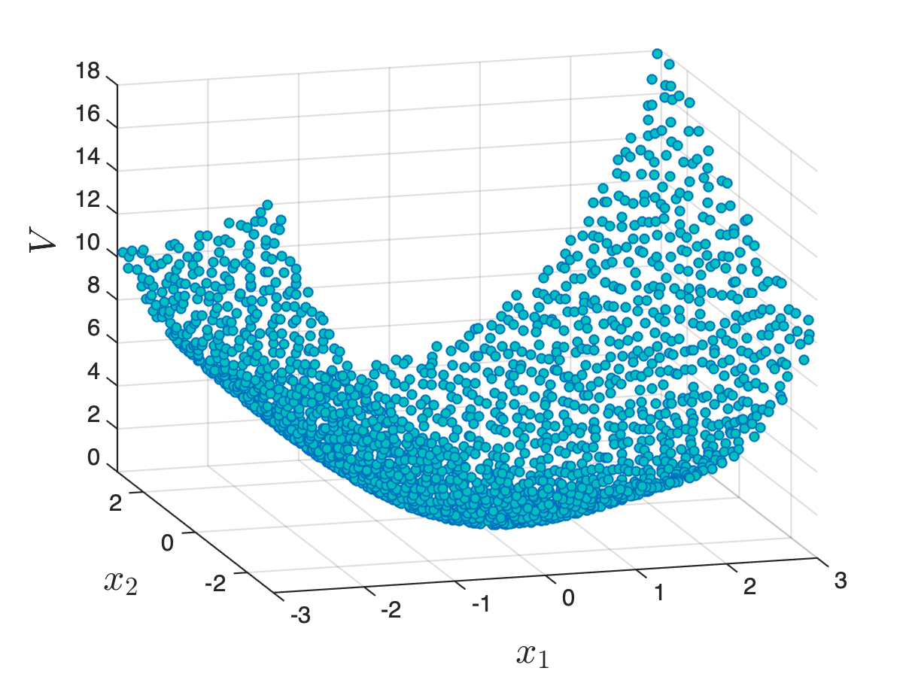
Sampling data
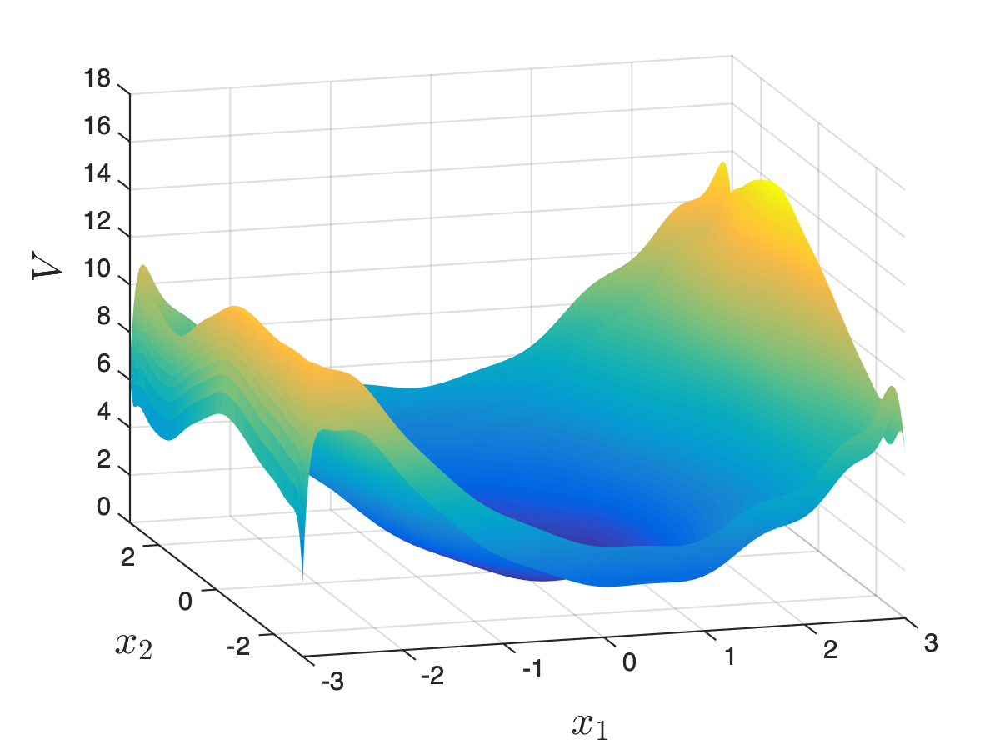
Linear least squares
w/o gradient for $N_d=40$
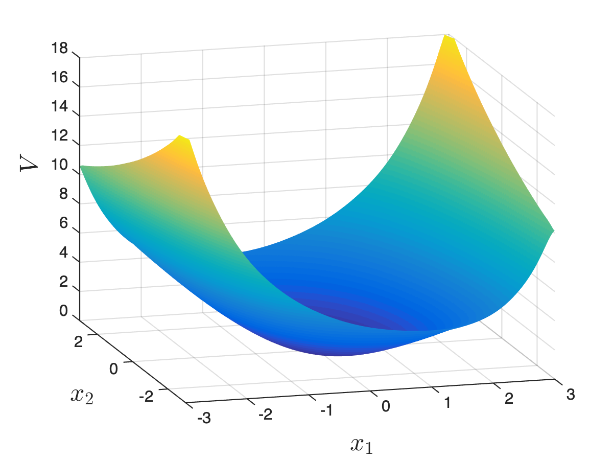
Linear least squares
w/o gradient for $N_d=120$
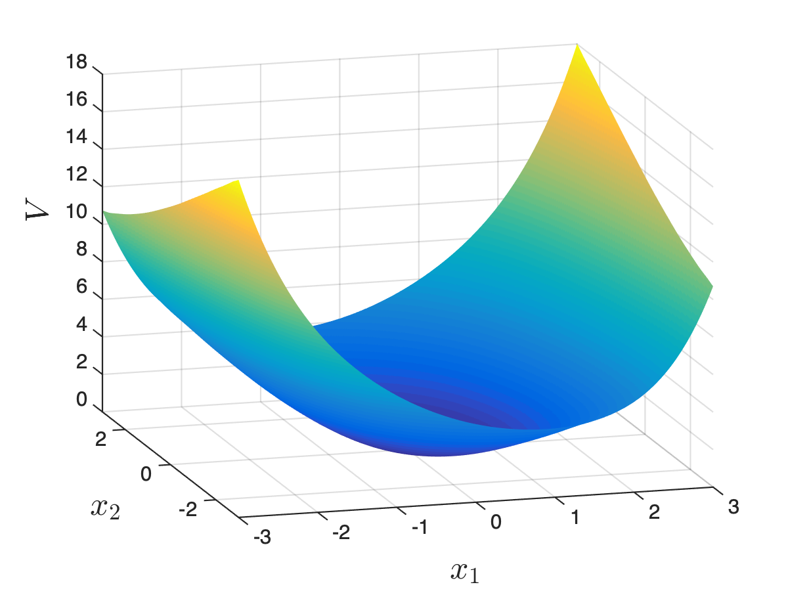
Gradient-augmented
+ $\ell_1$ for $N_d=40$
B. Azmi, D. K. and K. Kunisch,
Optimal Feedback Law Recovery by Gradient-Augmented Sparse Polynomial Regression, J. Mach. Learn. Res. 2021.
Gradient-augmented tensor train approximation
$$
\text{Loss:}\quad
\mathcal L(V,V_{\theta})
:=
\frac{1}{N_s}\sum_{i=1}^{N_s}
\|V(\mathbf x^{(i)})-V_{\theta}(\mathbf x^{(i)})\|^2
+
\mu
\|\nabla V(\mathbf x^{(i)})-\nabla V_{\theta}(\mathbf x^{(i)})\|^2.
$$
- The tensor-train (TT) architecture:
$$
V_{\theta}(\mathbf x)
:=
\sum_{\alpha_0,\ldots,\alpha_d=1}^{r_0,\ldots,r_d}
\mathbf v^{(1)}_{\alpha_0,\alpha_1}(x_1)
\mathbf v^{(2)}_{\alpha_1,\alpha_2}(x_2)
\cdots
\mathbf v^{(d)}_{\alpha_{d-1},\alpha_d}(x_d).
$$
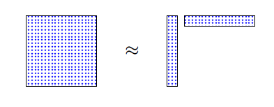
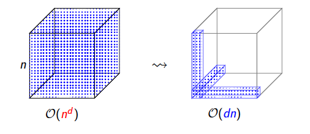
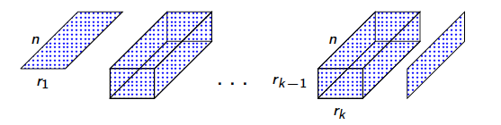
S. Dolgov, D.K. and L. Saluzzi.
Data-Driven Tensor Train Gradient Cross Approximation for HJB Equations, SIAM J. Sci. Comput. 2023.
Gradient-augmented supervised learning with RNNs
$$
\mathbf u_V(\mathbf x)
:=
-\frac{1}{2\beta}\mathbf g^{\top}(\mathbf x)\nabla V_{\theta}(\mathbf x),
\quad
V_{\theta}(\mathbf x)
=
l_M\circ\cdots\circ l_2\circ l_1(\mathbf x),
\quad
l_m(\mathbf y)
=
\sigma_m(\mathbf A_m\mathbf y+\mathbf b_m).
$$
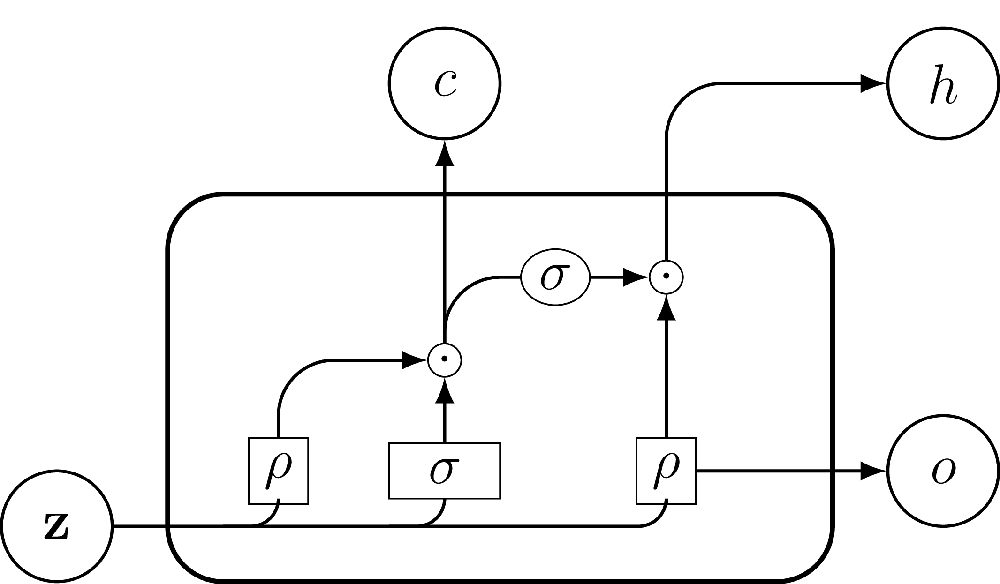
One-to-one LSTM cell
$$
\begin{aligned}
i &= \rho(W_i\,\mathbf z+b_i)\\
\widetilde c &= \sigma(W_c\,\mathbf z+b_c)\\
c &= i\odot\widetilde c\\
o &= \rho(W_o\,\mathbf z+b_o)\\
h &= o\odot\sigma(c)
\end{aligned}
\qquad
\begin{aligned}
&\text{\emph{input gate}}\\
&\text{\emph{candidate value}}\\
&\text{\emph{cell value}}\\
&\text{\emph{output gate}}\\
&\text{\emph{final output}}
\end{aligned}
$$
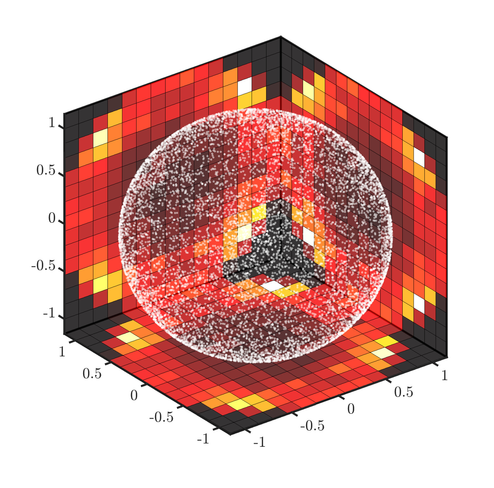
$t=2$, uncontrolled
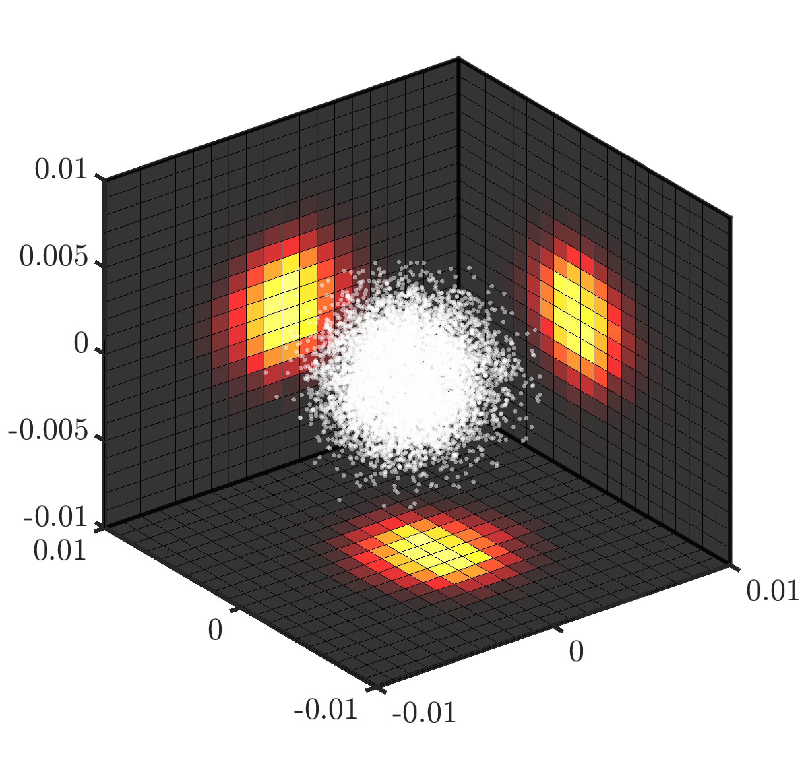
$t=2$, controlled
G. Albi, S. Bicego and D.K.
Control of high-dimensional collective dynamics by deep neural feedback laws and kinetic modelling, JCP 2025.
Sobolev training with second-order information
$$
\mathcal L(V,V_{\theta})
:=
\frac{1}{N_s}\sum_{i=1}^{N_s}
\|V(\mathbf x^{(i)})-V_{\theta}(\mathbf x^{(i)})\|^2
+
\mu_1\|\nabla V(\mathbf x^{(i)})-\nabla V_{\theta}(\mathbf x^{(i)})\|^2
+
\mu_2\|H(V(\mathbf x^{(i)}))-H(V_{\theta}(\mathbf x^{(i)}))\|_F^2.
$$
$$
\text{(HJB)}
\begin{cases}
\partial_t V(t,\mathbf x)+\mathcal H(\mathbf x,\nabla V(t,\mathbf x))=0,
\quad \text{for } t\in(0,T),\;\; V(T,\mathbf x)=0,\\
\mathcal H(\mathbf x,\mathbf p)
:=
\min_{u\in\mathbb R^m}
\left\{
\ell(\mathbf x)+\beta\|\mathbf u\|_2^2
+
\mathbf p^{\top}
\left(\mathbf f(\mathbf x)+\mathbf g(\mathbf x)\mathbf u\right)
\right\}.
\end{cases}
$$
Assuming that the $V(t,\mathbf x)$ is twice Fréchet in $[0,T]$, its
Hessian
$\Pi(t):=-\mathbf H(V(t,\mathbf x))$ is given by:
$$
\partial_t\Pi(t)
+
\mathcal H_{\mathbf p\mathbf x}(t)\Pi(t)
+
\Pi(t)\mathcal H_{\mathbf x\mathbf p}
+
\Pi(t)\mathcal H_{\mathbf p\mathbf p}(t)\Pi(t)
+
\mathcal H_{\mathbf x\mathbf x}(t)
=
0,
\quad
\Pi(T)=0,
$$
where $\mathcal H_{\mathbf p\mathbf x}(t):=\mathcal H(\mathbf x^*(t),\mathbf p^*(t))$.
- Adds $d^2/2$ data per sample.
- Brings curvature information.
- Expensive to compute (stiffness?).
- Errors to be measured in $H^2$ seminorm:
$$
\begin{split}
Err_{H^2}(\bar V)
:=
\left(
\frac{
\displaystyle\sum_{j\in\mathcal I_{val}}
\left(
\displaystyle\sum_{i,k=1}^{n}
\left|
\frac{\partial^2\bar V(\mathbf x^j)}{\partial x_k\partial x_i}
-
\frac{\partial^2 V(0,\mathbf x^j)}{\partial x_k\partial x_i}
\right|^2
\right)
}{
\displaystyle\sum_{j\in\mathcal I_{val}}
\left(
\displaystyle\sum_{i,k=1}^{n}
\left|
\frac{\partial^2 V(0,\mathbf x^j)}{\partial x_k\partial x_i}
\right|^2
\right)
}
\right)^{1/2}.
\end{split}
$$
N. Caroff and H. Frankowska. Optimality and characteristics of the Hamilton-Jacobi-Bellman Equations, ISNM 107 (Springer), 1992.
W.M. Czarnecki et al. Sobolev training for neural networks, NIPS 2017.
Sample complexity to exact recovery
$$
\text{Styblinski-Tang function:}\qquad
f_{ST}(x,y)
=
\frac{1}{2}
\left(
x^4-16x^2+5x+y^4-16y^2+5y
\right).
$$
Lives in the polynomial span, no projection error!
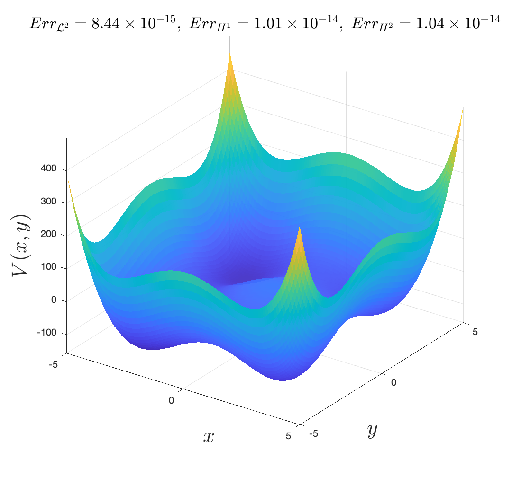
Value, $M=21$
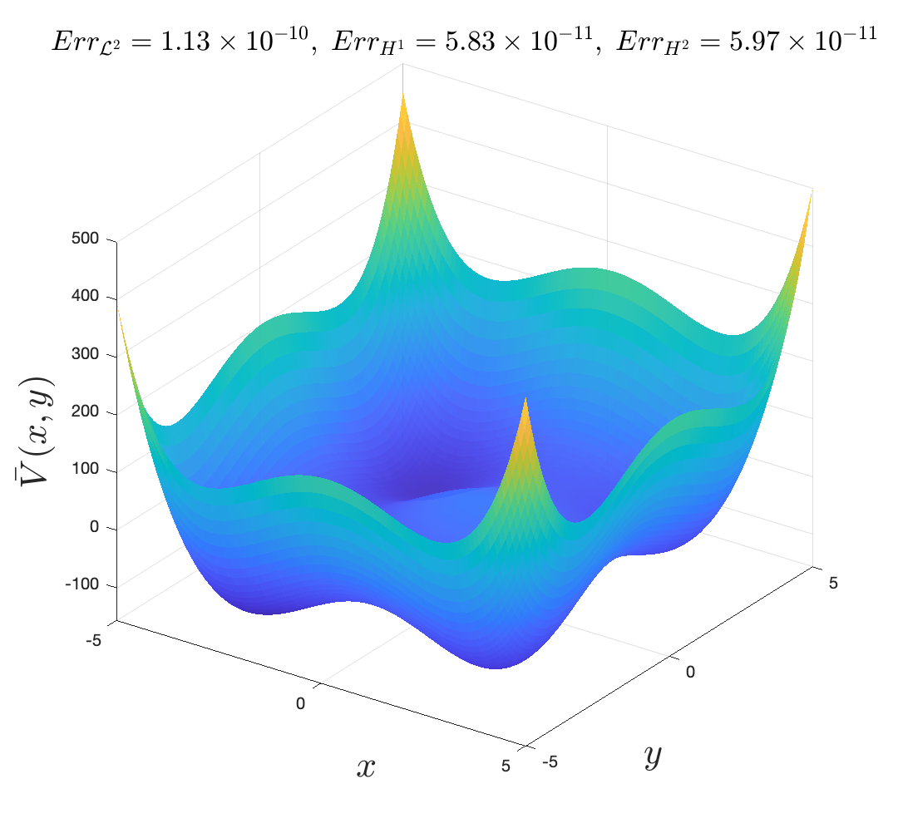
Gradient, $M=7$
Hessian, $M=4$
Sample complexity for LQ problems? $M=1$, regardless of the dimension.
Sobolev training: 2d Van der Pol oscillator
Cubic Van der Pol with $\ell(\mathbf x)=\|\mathbf x\|_2^2$, $\beta=1$, $T=3$.
Effect of derivative order in the loss.
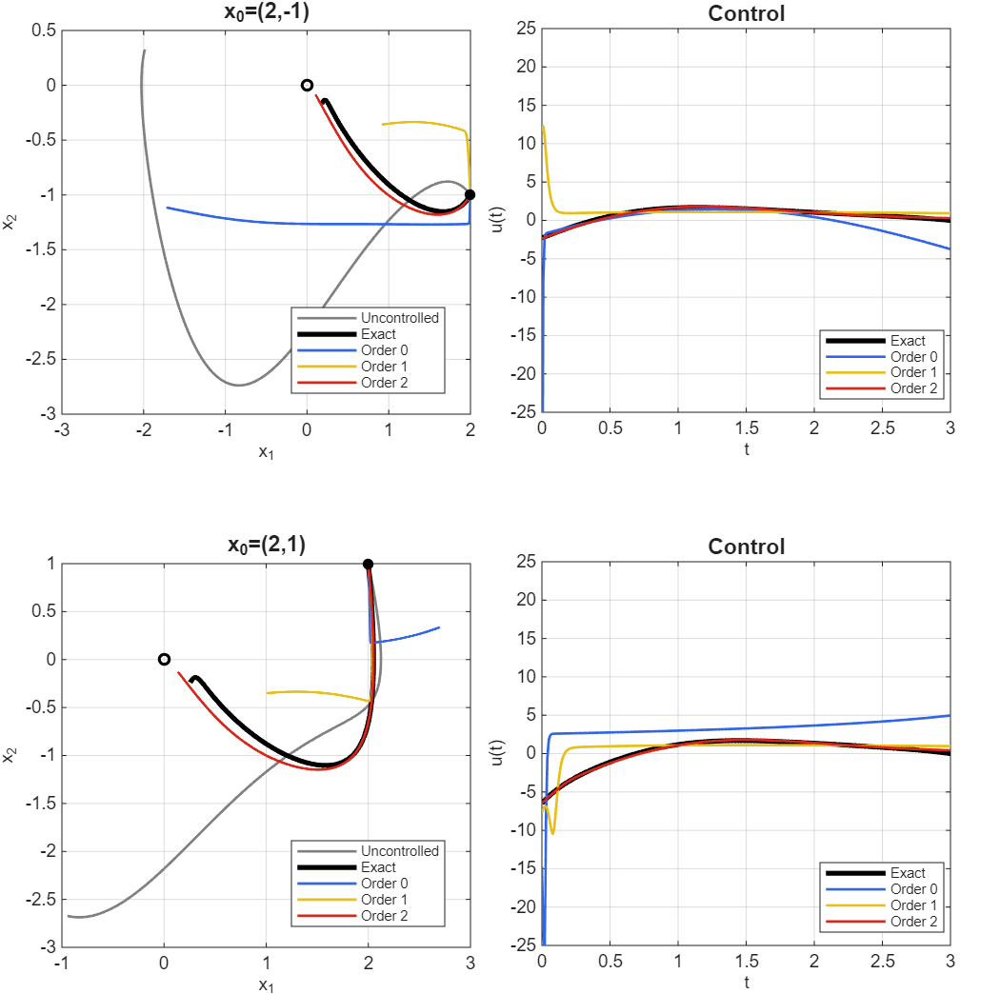
Closed-loop trajectories, state norm and control for two initial conditions; Order 2 (red) tracks the exact solution.
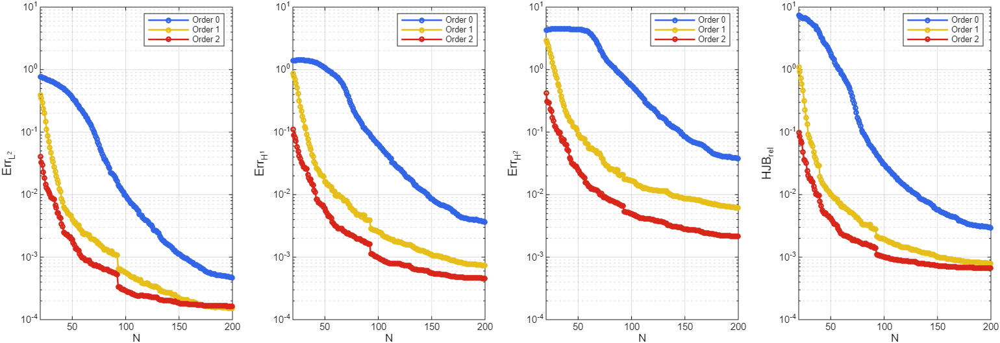
$L^2$, $H^1$, $H^2$ and HJB residual errors vs. $N$.
| $\tau$ |
$N_{\mathrm{O2}}$ |
$N_{\mathrm{O1}}$ |
$N_{\mathrm{O0}}$ |
$\tfrac{N_{\mathrm{O1}}}{N_{\mathrm{O2}}}$ |
$\tfrac{N_{\mathrm{O0}}}{N_{\mathrm{O2}}}$ |
Basis O2 |
Basis O1 |
Basis O0 |
| $10\%$ | $\mathbf{29}$ | $48$ | $102$ | $1.7$ | $3.5$ |
$\mathfrak I_{\mathrm{HC}}(4)\cup\mathfrak I_{\mathrm{TD}}(8)$ |
$\mathfrak I_{\mathrm{HC}}(4)\cup\mathfrak I_{\mathrm{TD}}(10)$ |
$\mathfrak I_{\mathrm{HC}}(4)\cup\mathfrak I_{\mathrm{TD}}(8)$ |
| $5\%$ | $\mathbf{38}$ | $61$ | $138$ | $1.6$ | $3.6$ |
$\mathfrak I_{\mathrm{HC}}(4)\cup\mathfrak I_{\mathrm{TD}}(8)$ |
$\mathfrak I_{\mathrm{HC}}(4)\cup\mathfrak I_{\mathrm{TD}}(10)$ |
$\mathfrak I_{\mathrm{HC}}(4)\cup\mathfrak I_{\mathrm{TD}}(8)$ |
| $1\%$ | $\mathbf{80}$ | $109$ | $277$ | $1.4$ | $3.5$ |
$\mathfrak I_{\mathrm{HC}}(4)\cup\mathfrak I_{\mathrm{TD}}(14)$ |
$\mathfrak I_{\mathrm{HC}}(4)\cup\mathfrak I_{\mathrm{TD}}(12)$ |
$\mathfrak I_{\mathrm{HC}}(4)\cup\mathfrak I_{\mathrm{TD}}(12)$ |
| $0.5\%$ | $\mathbf{87}$ | $134$ | $372$ | $1.5$ | $4.3$ |
$\mathfrak I_{\mathrm{HC}}(4)\cup\mathfrak I_{\mathrm{TD}}(14)$ |
$\mathfrak I_{\mathrm{HC}}(4)\cup\mathfrak I_{\mathrm{TD}}(12)$ |
$\mathfrak I_{\mathrm{HC}}(4)\cup\mathfrak I_{\mathrm{TD}}(12)$ |
| $0.1\%$ | $\mathbf{144}$ | $208$ | $1689$ | $1.4$ | $11.7$ |
$\mathfrak I_{\mathrm{HC}}(4)\cup\mathfrak I_{\mathrm{TD}}(14)$ |
$\mathfrak I_{\mathrm{HC}}(4)\cup\mathfrak I_{\mathrm{TD}}(14)$ |
$\mathfrak I_{\mathrm{HC}}(4)\cup\mathfrak I_{\mathrm{TD}}(14)$ |
$N$ basis functions to reach relative $H^1$ tolerance $\tau$;
Order 2 the most efficient.
Sobolev training: 6d rigid-body satellite
Attitude stabilisation of a rigid satellite in $\mathbb R^6$, $T=20$, three-channel control.
Curse of dimensionality meets sparse regression.
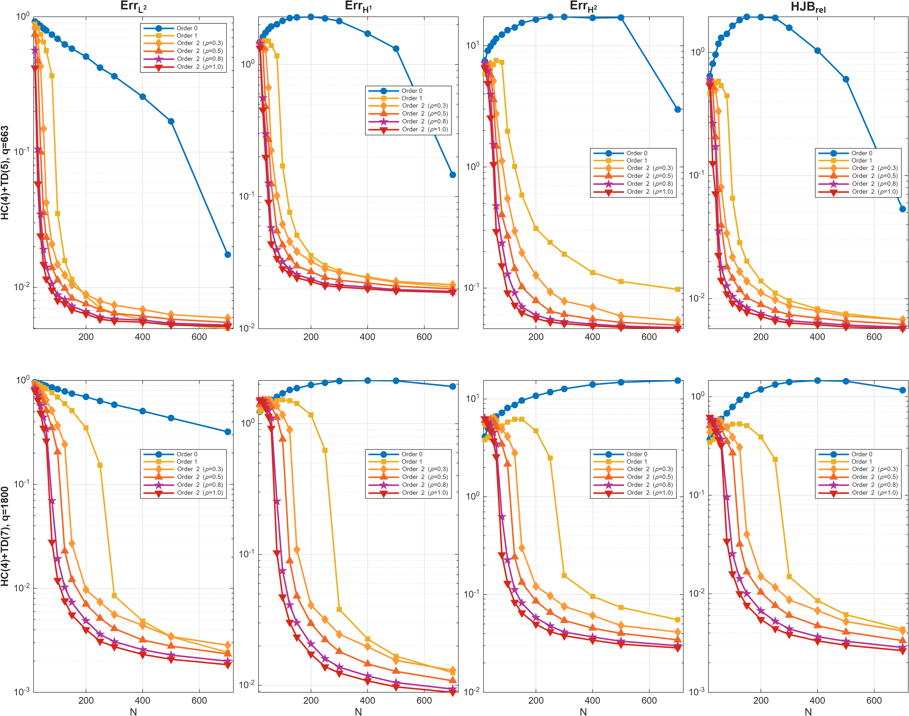
Errors vs. $N$ for
$\mathfrak I_{\mathrm{HC}}(4)\cup\mathfrak I_{\mathrm{TD}}(5)$ ($q=663$, top)
and
$\mathfrak I_{\mathrm{HC}}(4)\cup\mathfrak I_{\mathrm{TD}}(7)$ ($q=1800$, bottom).
Order 0 stagnates; Order 2 uniformly best.
| $N$ | $s$ | $q$ | $M/q$ |
$Err_{L^2}$ |
$Err_{H^1}$ |
$Err_{H^2}$ |
$HJB_{rel}$ |
| 50 | 5 | 663 | 2.1 | 1.6e-2 | 1.1e-1 | 1.24 | 4.2e-2 |
| 100 | 6 | 1044 | 2.7 | 7.4e-3 | 2.8e-2 | 8.7e-2 | 9.1e-3 |
| 200 | 7 | 1800 | 3.1 | 3.9e-3 | 1.7e-2 | 4.8e-2 | 5.3e-3 |
| 300 | 7 | 1800 | 4.7 | 2.7e-3 | 1.2e-2 | 3.8e-2 | 3.8e-3 |
| 400 | 8 | 3051 | 3.7 | 2.2e-3 | 1.1e-2 | 3.5e-2 | 3.1e-3 |
| 500 | 9 | 5047 | 2.8 | 1.7e-3 | 1.0e-2 | 3.8e-2 | 3.0e-3 |
| 700 | 9 | 5047 | 3.9 | 1.3e-3 | 7.2e-3 | 2.8e-2 | 2.0e-3 |
| 1000 | 10 | 8044 | 3.5 | 9.1e-4 | 5.6e-3 | 2.5e-2 | 1.5e-3 |
| 1500 | 11 | 12406 | 3.4 | 6.3e-4 | 4.4e-3 | 2.2e-2 | 1.1e-3 |
| 1800 | 11 | 12406 | 4.1 |
5.1e-4 |
3.5e-3 |
1.8e-2 |
9.4e-4 |
Best
$\mathfrak I_{\mathrm{HC}}(4)\cup\mathfrak I_{\mathrm{TD}}(s)$
per $N$ (minimising $Err_{L^2}$);
$M/q=28N/q$ overdetermination ratio.
Adaptive basis selection: a closed-form residual-decay indicator
Approximation
$\hat V^{(k)}\in \mathrm{span}\{\phi_j:j\in\Gamma^{(k)}\}$
Residual
$R(\hat V^{(k)}):=\mathcal L_{\mathrm HJB}\hat V^{(k)}$
Which $\phi_j$ to add next?
Single-direction projected DWR.
$$
e^{(k)}_{j,\mathrm{PDE}}
=
\frac{
\left|
\langle
R(\hat V^{(k)}),
a_k^\top\nabla\phi_j
\rangle_{L^2}
\right|
}{
\|a_k^\top\nabla\phi_j\|_{L^2}
}
$$
$$
a_k(\mathbf x)
=
\mathbf f(\mathbf x)
-
\frac1{2\beta}
\mathbf g(\mathbf x)\mathbf g(\mathbf x)^\top
\nabla\hat V^{(k)}(\mathbf x)
$$
Closed-form, mesh-free, dimension-agnostic.
- Greedy enrichment:
$j^*=\arg\max_{j\in\Lambda^{(k)}} |e^{(k)}_{j,\mathrm{PDE}}|$
- Empirical version $\tilde e^{(k)}_{j,\mathrm{PDE}}$ from supervised samples.
- Joint data selection via gradient-augmented score.
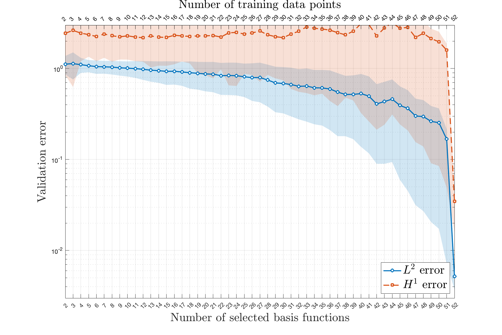
Random basis + data
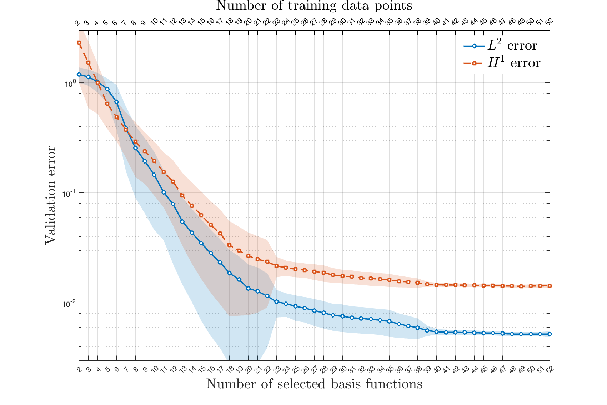
Adaptive basis + data
Same accuracy with substantially fewer basis functions and samples than random selection.
Y. Huang, D. K. and Y. Zhu.
Adaptive Approximation of PDEs in Nonlinear Optimal Control, preprint 2026.
Supervised learning — neural networks with separable representations
-
Separable DNNs:
$
V_{\theta}(\mathbf x)
=
\sum_{j=1}^n W_j(z_j;\theta_j)
$
inheriting connectivity from the control problem.
-
Approximation theorem:
$$
|V_{\theta}(\mathbf x)-V(\mathbf x)|
\le
\varepsilon(1+\|\mathbf x\|_2^2),
\qquad
N(W)\le s^{d+1}C^d+n+1.
$$
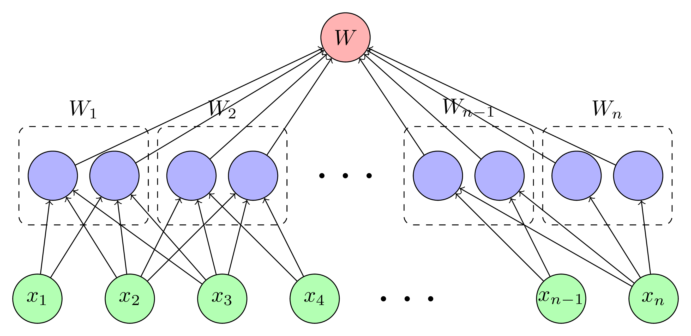
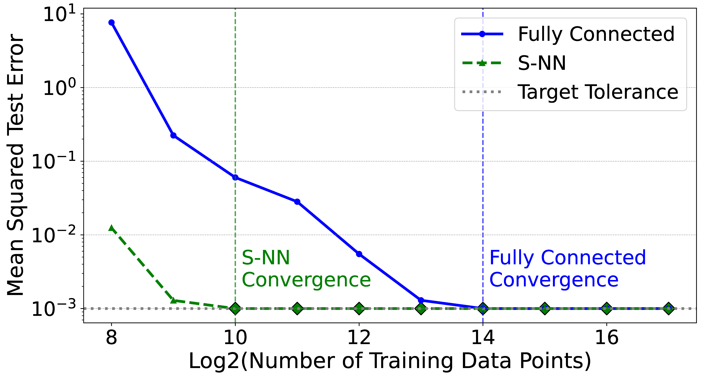
M. Sperl, L. Saluzzi, D. K. and L. Grüne.
Separable Approximations of Value Functions and Their Representation by Neural Networks,
arXiv:2502.08559.